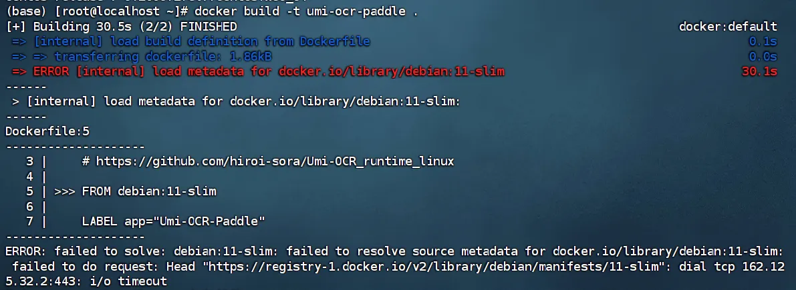

umi-ocr基于CentOS7的部署指南
公司的一个项目以umi-ocr为基础进行设计，需要部署在CentOS系统的服务器上查看实际效果，本文记录了我根据官方指南，使用docker成功部署的过程。
此处目前未提供打包好的.tar文件
官方指南： Umi-OCR_runtime_linux/README-docker.md
注意：如果使用打包镜像umi-ocr-image.tar进行构建，请从第六步开始阅读
1.部署前检查 #
部署前，请检查主机的CPU是否具有AVX指令集：
lscpu | grep avx
如果输出了类似如下的结果，那么可以继续部署。
Flags: ... avx ... avx2 ...
如果看不到任何输出，这表明当前CPU不支持AVX指令集，暂时无法使用 Umi-OCR-Linux 。
2.下载dockerfile #
wget https://raw.githubusercontent.com/hiroi-sora/Umi-OCR_runtime_linux/main/Dockerfile
3.构建镜像 #
docker build -t umi-ocr-paddle .
设置镜像名称为 umi-ocr-paddle 。（Dockerfile默认下载使用 PaddleOCR-json 引擎）
如果遇到无法下载的情况，类似于：
代表下载相关依赖时出现网络问题，需要设置镜像源。
3.1 如何设置镜像源 #
在/etc/docker/daemon.json文件修改镜像源，使用vim工具修改（sudo vim /etc/docker/daemon.json）或者ssh远程连接修改（基于代码编辑工具）
修改后的daemon.json（提供的镜像源不一定稳定）：
{
"data-root": "/home/docker-data",
"dns": ["8.8.8.8", "8.8.4.4"],
//国内镜像源
"registry-mirrors": [
"https://registry.docker-cn.com",
"https://docker.mirrors.ustc.edu.cn",
"https://hub-mirror.c.163.com",
"https://mirror.baidubce.com",
"https://ccr.ccs.tencentyun.com",
"https://docker.1ms.run"
]
}
4.运行容器 #
基于源文档中的GUI模式进行部署，需要显示器设备（经测试，Xorg和Gnome桌面系统可用）
需要在主机上开放 X 服务权限，允许容器内的应用连接到宿主机桌面。一定要在显示器使用的情况下在主机上运行
xhost +
开启过程可能会出现（xhost: unable to open display “"）：
(base) [root@localhost ~]# xhost
xhost: unable to open display ""
代表没有连接到显示设备，需要检查显示器开启情况（不可处于休眠状态）；在主机上输入echo $DISPLAY，应该会显示目前的使用显示器设备（默认为0），此时代表可以正常使用：
(base) [root@localhost ~]#echo $DISPLAY
:0
显示正常后，运行xhost +，应该会显示：
(base) [root@localhost ~]# xhost
access control disabled,clients can connect from any host
在运行之前，输入docker ps查看正在运行的容器，输入docker ps -a查看所有容器，注意：如果在列表中出现名称为umi-ocr-paddle的镜像则证明已经存在，如果尚未执行run则用docker rm [名称/ID]删除

此时运行（实际输入不需要分行）：
docker run -d --name umi-ocr
-v /tmp/.X11-unix:/tmp/.X11-unix -e DISPLAY=$DISPLAY
-v /home:/home
-p 1224:1224
umi-ocr-paddle
应该会显示容器的ID：

此时输入docker ps查看正在运行的容器，输入docker ps -a查看所有容器，确认容器存在后执行docker start [名称/ID]启动容器，应该可以看到ocr的图形界面。

5.GUI控制 #
如果点击 Umi-OCR 窗口右上角的 × ，前台窗口会被关闭。但 Umi 仍会在后台活动，提供HTTP接口服务。
重新打开窗口 指令：
docker exec umi-ocr /bin/sh -c "/app/umi-ocr.sh --show"
截图OCR 指令：
docker exec umi-ocr /bin/sh -c "/app/umi-ocr.sh --screenshot"
更多指令请参考
命令行手册 。如果需要传入文件路径（如 --path 指令），请确保该文件的任意上级目录，在 docker run 时已通过 -v 挂载到容器中。
Docker GUI 模式可以使用大部分功能，就像主机中的普通应用一样：
- 访问宿主机内存，进行屏幕截图、粘贴图片。
- 访问宿主机硬盘，拖拽导入本地文件。（只能访问被挂载到容器中的路径）
Docker 中部分功能受限，无法使用：
- 创建桌面、开始菜单快捷方式。
- 系统托盘区图标。
如果在容器内部的命令行输出，发现以下报错，忽略即可，不用管。
ERROR: No native SystemTrayIcon implementation available.
Qt Labs Platform requires Qt Widgets on this setup.
Add 'QT += widgets' to .pro and create QApplication in main().
ERROR: No native Menu implementation available.
Qt Labs Platform requires Qt Widgets on this setup.
Add 'QT += widgets' to .pro and create QApplication in main().
6.如何使用docker镜像（.tar） #
-
在目标设备上打开终端。
-
导航到传输
.tar文件所在的目录。 -
使用
docker load命令从.tar文件加载镜像。docker load -i umi-ocr-paddle.tarDocker 将会读取
.tar文件中的镜像数据并将其加载到目标设备的本地 Docker 镜像仓库中。 -
验证镜像是否已成功加载。
在目标设备上执行：
docker images应该能够在列表中看到
umi-ocr-paddle镜像。
镜像成功加载到目标设备上后就可以使用 docker run 命令来运行 Umi-OCR 容器了。（从第四步开始）
如果不使用镜像则从第一步开始。
7.一些总结 #
这个项目的部署主要就是对服务器环境的修改适配，docker pull的网络问题确实已经是见怪不怪，反而是权限不够导致无法修改daemon.json比较头疼（当时一直没有root权限），刚重装系统的服务器上几乎没有什么开发工具，前期装依赖就花费了不少时间，但是完成后也对docker等工具有了更深的理解
实际上还是有感到疑惑的地方，首先就是ssh界面为什么不能设置显示器（export $DISPLAY && echo $DISPLAY），而使用服务器的图形界面就可以设置。在ssh界面，echo命令可以设置显示器为默认，但是一旦尝试xhost就会报错“uable to open”。
还有代理的问题，前期尝试过使用代理来pull，但尝试两个代理端口都失败了（clash的7890端口和ANYLAND的33210端口），命令行显示端口处于监听状态，但是ssh连接界面始终显示“failed to connect”，或许这些问题会在下一次装某个项目时解决吧。